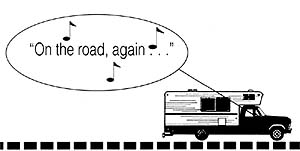
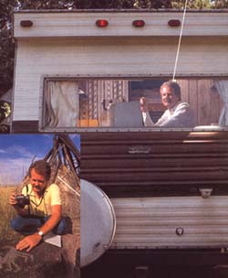
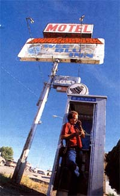
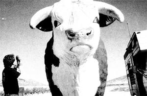

I FEEL LIKE WALTER MITTY waking to find out my dream's come true!" Indeed, according to his mail at least, Chuck Woodbury, editor and publisher of Out West, "the newspaper that roams," is leading the life many of his subscribers only dream about. Much of the time he travels the back roads of the American West in an 18-foot motor home equipped with two computers and a darkroom. By the time he returns to his tiny, three-room rented house in Sacramento, another quarterly edition of his ad-free newspaper is 80% written, and its photography is completed.
Earning a living doesn't have to be a deadly process When you find out how to thrive by doing something you love, you know the joy of turning your hand, as Gary Snyder wrote, "To the real work, to What is to be done."
"How great it is to be free to see this beautiful country." on the road, again.
"I picked the West as my territory because it has a certain mystique. It was also," he confesses, "as far as I could easily travel and still get back home to take care of business."
Business involves reading his voluminous and often hilarious-correspondence, dealing with an ever-growing subscription list, and preparing his 40-page, tabloid-size newspaper on his Macintosh Plus computer. The package is a fresh and funny look at rural and small-town Americana that many must have thought was forever lost in today's amalgamation of interstate highways, fastfood franchises, look-alike motels, and mediamelting-pot attitudes. But by wandering off the interstates, using his publication as a primary interviewing tool, and letting his "skewed way of looking at things" (as one reader described it) guide his subject matter, Chuck shows us an America that has never been lost at all. And people love it.
"Out of every five subscribers, one orders a gift subscription for someone else, and out of every five gift subscriptions, one of those soon gives Out West as a gift."
The newspaper came into being in January 1988 with $500 capital and 25 subscribers. "And some of those were relatives," Chuck readily admits. "I first got into publishing when I attended California State University, Sacramento, and worked as the business manager of the school paper." Later he helped a friend put out a rock-and-roll publication and eventually owned a monthly newspaper in Rancho Murieta, a suburb of Sacramento. But the inevitable stress of staff management and maintaining a successful business convinced him to sell out and try freelancing-in both public relations and travel writing. He found freelancing to be a fairly lonely profession, but that loneliness paid off. It was while traveling in his little, $8,000 motor home "on a long, lonely road that the idea for Out West popped into my mind."
Despite his small subscription list, Chuck printed 3,000 copies of his first issue, which he describes as " 24 pages with ink on them." Hoping for some free publicity, he mailed 500 to various media, and what happened next was truly worthy of a Walter Mitty fantasy. By March 1988, Charles Murphy of "ABC News" was wanting an onthe-road interview. That was followed by CBS's "Nightwatch" and NBC's "Today Show." He was written up in such newspapers as the Washington Post and the Los Angeles Times and has been a guest on numerous radio shows. In January 1989, Out West was featured in People magazine. "I suddenly became a minor-league somebody," he says, still a little dazed by it all.
In an incredibly short time, his subscription list grew to 6,000 very loyal and vocal readers, whose travel tips and opinions (along with Chuck's off-the-wall and often blunt answers) fill several of the newspaper's pages each issue. Subjects covered can range from the nation's economy to the IQ of cows to the possibility of the editor meeting Vanna White. ("At the time of my first issue, every other tabloid was plastering Vanna White on its cover, so, without rhyme or reason, I did too.")
The 42-year-old bachelor also receives others from female would-be traveling companions, and the rest of his readers enthusiastically encourage or discourage his accepting such invitations. One woman wrote: "The comment from some gals who were worried that you were lonesome on the road reminded me of one of my mother's sayings: `There are some people who not only keep you from being lonely but make you wish you were.' " ("I've met a few of those people," Chuck replied.)
Many scold him for charging too little for his paper, and some enclose extra money "to fix a flat tire" or "to buy a six-pack." Chuck, however, has no current plans to raise his $6-a-year subscription price, because it's his philosophy-and he thinks it makes good business sense-"to give people more than you have to. It has also helped that I'm a general interest publication. It's not like I'm trying to sell to, say, wind surfers.
AN OUT SST SAMPLER:Americana as seen through the eyes of Chuck Woodbury.
"In the beginning," he notes, "most of my subscribers were retirees, who, like me, were motor-home gypsies. But they sent gift subscriptions to their children, and the word spread. Now I have readers of all ages, in every state and all the provinces of Canada, as well as overseas. With the first subscriptions coming up for renewal, I'm very pleased to discover that people are resubscribing at a rate of about 70010. When I'm at home, one of the highlights of my day is going to the post office. By the end of the year, I fully expect to have 10,000 subscribers. My great fear is that Out West will grow so much that I won't have time to spend six months on the road. I used to be able, for example, to publish almost every letter I received. Now I get more than 200 publishable letters for each issue, and not only do I read them all, but then must face the thought of leaving some out! But I dread taking on any staff. I decided quite a while back that I never wanted to be a boss-or to be broke-again. I work very hard at keeping this whole thing simple. I believe in free time and in spending money after you get it, not before."
It's not just the free time and the chance to travel that makes Chuck a happy man. He's equally delighted at how much he enjoys putting this publication together. "I never started out to be a writer. In the course of my work, I just found myself doing it more and more. I also kept a journal for 10 years in which I mostly complained all the time. Now, when I'm out on the road with no schedule, with no responsibilities or worries, and with the stress level so low, I'm really amused at what comes out-like a full-scale article on my battle inside the motor home with a mosquito, or my solo golf game on a huge sunbaked lake bed in Death Valley. And these seem to amuse most of my readers too."
Inevitably, there are comparisons made to Garrison Keillor of "Prairie Home Companion" fame, to which Chuck replies, "Gary has a better voice than I do. He's famous for Wobegon. I'm famous for `I be gone."
In my travels, I stop at every national park, national monument, state park, and museum I can.
These visits have affected me in many ways, but in one way in particular: I have become acutely aware of time. I have become aware of how short a year is, or a decade, or a human lifetime.
When you visit a place like the Grand Canyon, you will learn that some of the land there was created 100 million years ago.
Drive along the dry plains along the Columbia River in eastern Oregon, and you will learn that the land was a rain forest millions of years ago. At Dinosaur National Monument you will learn that dinosaurs existed for 125 million years.
Yet we humans are labeled old when we have lived a mere 60 or 70 years. A 53-yearold man I met last week told me that he had recently been addressed as "Old Man" for the first time. He wasn't happy about it.
Earth has been here for billions of years, and it will be here for billions more. How many human generations is that?
Time is a relative thing. George Burns is a baby.
"Hacks" Honored
Tie hacks of the West are remembered along U.S. 261287 about 20 miles west of Dubois, Wyoming. At the Hack Memorial Wayside, you can learn all about the hearty fellows who carved railroad ties from lodgepole pines. They were called tie hacks.
Here's some information from the monument.
"Rough, tough, sinewy men, most of Scandinavian origin, whose physical strengths were nearly a religion. The millions of cross ties they hacked out of the pine forests kept the railroads running through the West.
"The tie hack was a professional, hewing ties to the exact seven inches on a side. For years he was paid 10 cents a tie-up to $3 a day; room and board cost $1.50. Each man owned his own equipment, which cost him his first 10 days of work. A tie hack could usually get three to five ties, eight feet in length, from a clear, limb-free trunk of a lodgepole pine.
"Mostly bachelors, they lived in scattered cabins or in tie camps; they ate hearty meals at a common boardinghouse. Entertainment was simple and spontaneous. A few notes on a squeeze box might start an evening of dancing. The spring drive down the Wind River usually ended with one big party in town with enough boozing and brawling to last them another year.
"These hardworking, hard-drinking, hardfighting men created an image that remains today only in tie legend. By the end of World War II, modern tools and methods brought an end to the era that produced this proud breed of men."
The men honored in the monument worked for the Wyoming Tie and Timber Company from 1916 to 1946. They produced millions of ties. The Chicago and Northwestern Railroad alone needed 2,500 ties per mile of track.
Each May, the citizens of Dubois pay tribute to these tie hacks of yesteryear with a smorgasbord dinner. The most recent dinner was the forty-first such affair.
Roadside Journal
I've been studying the names of a few of the cities here in Utah. A fellow I met today speculated about the name of the town of Levan, which is smack-dab in the center of the state. "Spelled backwards, it spells navel," he said. It turns out that Brigham Young named the town, and some folks believe he named it for that very reason. I guess With all the other people out there who that's how many interesting stories every perwant to be doing what Chuck is doing, he's son has if you spend enough time with them). remarkably undisturbed by the thought of That comes out to 10 billion stories. So competition. there's room for both of us.
"Do you know how many stories there are Chuck, however, really knows how to find in the Naked West?" he wrote one potential those stories. After the first five minutes of
publisher. "For the answer, first determine my afternoon visit (I caught him in Sacra the total number of people-let's say 100 mento because he was busy finishing up an million-then multiply , by 100 (because as yet untitled book for William Morrow and Brigham Young had a sense of humor.
Chuck Woodbury parks his traveling newsroom to photograph a very large steer along the road in Nevada.
"My great fear is that Iwon't have time to spend six months on the road."
Centerville, you might think, would be in the center of the state. But no, it's just between Salt Lake City and Ogden.
The other day I stopped for lunch in Snowville, and I thought it was an odd name for a place not even in the mountains. Why Snowville? I checked around and discovered the town was named for a Mormon president, Lorenzo Snow.
Farr West also interested me. I figured it must be on the western edge of the state, and whoever named it added an extra r just to be different. But no, that wasn't right. Farr West, north of Salt Lake City, got its name from pioneers Lorin Farr and Chauncey West.
Finally, you might think a town like Orangevale would be the center of an orangegrowing region. Not so. The town was named after an early settler, Orange Seely.
One interesting town name I must check out, however, is not in Utah but in Washington. Its name is George. I've got to check out George, Washington, and see if it was actually named for the president.
I was reading a brochure about Fremont County, Wyoming. It mentions that it has the largest unfenced area in the United States80 square miles.
At first that didn't seem too big an area to me. Yet when I think about it, nearly everywhere I go there are fences. Sometimes, on a lonely road, I feel like walking off into the countryside to snap a photo. Two times out of three I can't, because there is a fence in the way.
Co., Inc.), I was never sure who was interviewing whom, or which of us left that day knowing more about the other.
He obviously has an insatiable curiosity about people. For example, when he was stopped at a road construction site, he jumped out of his vehicle to interview the flagwoman. Before being waved on, he knew her marital status (divorced), her weight So maybe 80 square miles without fences is a pretty big deal.
By the way, the county seat of Fremont County is Lander, population 9,500. Until 20 years ago, the main street in the town was unpaved-that's the way the citizens preferred it. Today, cattle are still driven through townright down Main Street.
You won't find that in the county seat of Los Angeles.
Flaming Gorge Reservoir in southwestern Wyoming is known for its beauty and great fishing. But unknown to many visitors is that deep beneath its surface is the city of Linwood, "the city that drowned."
The town was laid out by George Solomon in 1900. The 41 st parallel, which formed the Utah-Wyoming border, ran directly through the middle of town, making it an interesting community, since it was in two different states.
Linwood School, or "Stateline School," was built in the fall of 1904 and had the distinction of being the only school in the country to be run by two state school boards. The north half was in Wyoming and the south half in Utah.
One story goes that when public dances were held in Linwood School, if the law from Wyoming appeared, the outlaws in attendance would go to the Utah side of the dance floor. If the Utah law showed up, the situation was reversed.
It's said that the two forces never showed up at the same time.
(110), famous people she's met on the job (a Swiss ambassador), her working day (10 to 14 hours), her salary and her male coworkers' attitude ("Would you stand out here for $8 an hour?"), how she liked her job ("This is not what I want to do forever"), and her future life plans ("I don't know"). "I call such encounters my 50-second interviews," Chuck laughs.
As a matter of fact, Chuck laughs a lot. He chuckles at his paper's tabloid-style headlines. "The Startling Truth About Jackalopes" is one in last summer's issue. And, sure enough, there is a spread inside about the jackalope--a legendary creature that is part jackrabbit, part antelope.
"But there are no startling truths," Chuck admits, "except that the 5,000 residents of Douglas, Wyoming, have suffered from a depression since the oil-boom years, and someone came up with the jackalope as a way of catching the tourists speeding past on I-25. Now the city fathers are contemplating spending $125,000 on an 80-foot jackalope that can be seen from the interstate." Since a stuffed jackalope head (real jackrabbit, real antlers) adorns his living room wall, Chuck concedes that the idea has merit. Such things as jackalopes; "Liquor Stores Where the Ladies Can Shop"; "Places Called Eat"; and Bill, Wyoming, a town with a population of one, tickle Chuck's funny bone.
His laughter also surfaces while telling of some of the weirder characters he's written about. Now he totes a video camera to film some of these encounters as well as examples of "good food at greasy spoons," interesting tombstones, crazy billboards and signs, and anything else that attracts his "skewed" attention. He doesn't know yet what he'll do with these videos, but if the tape he showed me of Tom the burping turkey (also of Douglas, Wyoming, and featured in last summer's issue) is a sample, his Out West aficionados will love the end result.
As to other future plans, he will someday have to replace his increasingly frayed motor home, and because Sacramento is growing rapidly, this lover of small towns is thinking about moving his headquarters to somewhere in the Sierra foothills. But as he's told his readers, "I'm not sure what I'm doing for the rest of my life, except it will involve journalism. I also plan to eat Cheez-its at least three times a year, and I hope one day to meet the Goddess of Love, Vanna White. Other than that, I have no plans."
That's good thinking, since keeping it simple and having no plans are obviously among the main ingredients in Chuck's success.
To subscribe to Out West, send $6 to Out West, P.O. Box 19894, Sacramento, CA 95819.
|
 ED KASHI |
 DAVID FALCONER |
 COURTESY OF OUT WEST |
|
 |
|
|